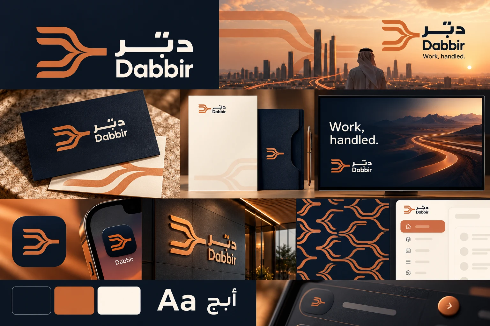

Connect the work
Bring the right systems and information into a coherent workflow.
امنح المهمة طريقًا واضحًا إلى الإنجاز
Dabbir helps teams assign repeatable work to supervised digital agents, with clear handoffs, visible progress, and people firmly in control.
See what we do →
Bring the right systems and information into a coherent workflow.
Make the important signal visible, understandable and ready to use.
Make handoffs, responsibilities and decisions clear at every step.
Build Dabbir around delegation people can understand and control. Direct verbs, converging paths, and a warm operational tone turn automation from an abstract promise into a clear working relationship.
تُبنى علامة دبّر حول تفويض مفهوم وتحت السيطرة. تحوّل الأفعال المباشرة والمسارات المتلاقية والنبرة التشغيلية الدافئة الأتمتة من وعد مجرد إلى علاقة عمل واضحة.
إنجاز واضح
تفويض ذكي
سهولة يومية
تحكم بشري
A future where teams hand routine coordination to trusted systems and keep their attention for judgment, relationships, and growth. Dabbir would make capable digital agents feel practical, supervised, and easy to direct across everyday business operations.
مستقبل تسند فيه الفرق تنسيق الأعمال المتكررة إلى أنظمة موثوقة، وتحتفظ باهتمامها للحكم والعلاقات والنمو. يجعل دبّر الوكلاء الرقميين عمليين، خاضعين للإشراف، وسهلين في توجيه أعمال المؤسسة اليومية.
من الطلب إلى الإنجاز.
Back to the beginning ↑